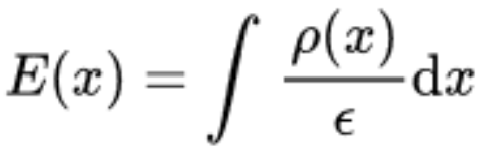
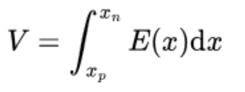

In a pn junction, the width of a depletion zone depends on the applied voltage on the junction. In this approximation, it is assumed that there is a depletion width W around the transition from p to n where the charge carrier densities are negligible. Outside of the depletion width, the charge carrier densities are equal to the doping concentrations. The semiconductor is electrically neutral outside of the depletion width. Using this depletion approximation it is possible to calculate important properties of pn junctions.
The charge density distribution for an arbitrarily doped pn-junction is:
The charge density can be integrated to determine the electric field:

The voltage V then derives from:

The variables xn and xp denote the points in space at which the depletion region on the n-doped side starts and on the p-doped side ends. N(x) is the total doping concentration depending on the position x in the pn-junction in micrometers. It is calculated by subtracting the density of acceptors NA(x) from the density of donors ND(x).
The entries below are used to describe this doping profile. Insert two functions dependent on x to plot the doping profiles and the resulting depletion width depending on the reverse-biased voltage. Then choose the interval of x, for which the depletion width shall be plotted. Finally, click on the Plot button, to display the inserted doping profiles and the resulting depletion width depending on the reverse bias voltage.
|
Depletion Width
|
Doping Concentration
|
Inside the semiconductor
Explore the doping profile and watch the depletion region expand with reverse voltage.
Drag to rotate · Arrow keys also work
Gold outlines mark the depletion region; doping remains present inside it.
Color represents net doping ND − NA, normalized to the largest magnitude in the plotted interval. Widths are interpolated from the calculator’s voltage curve. The transverse dimensions are illustrative.